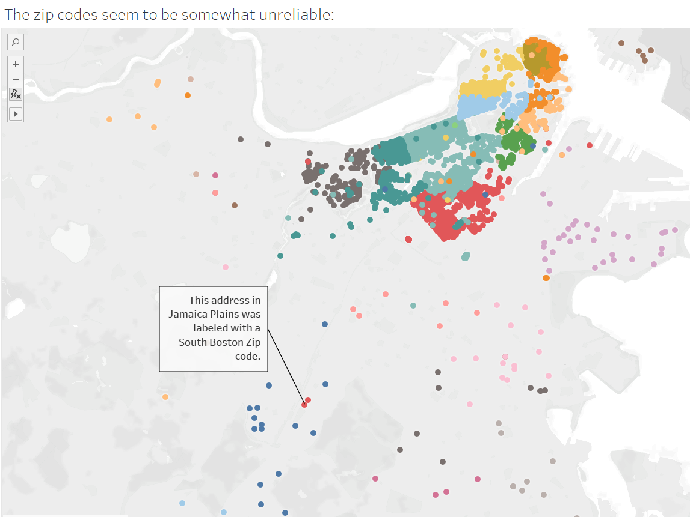
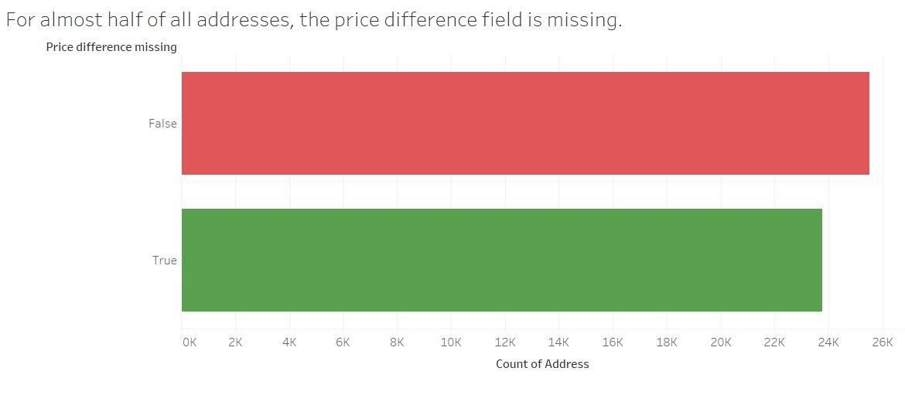
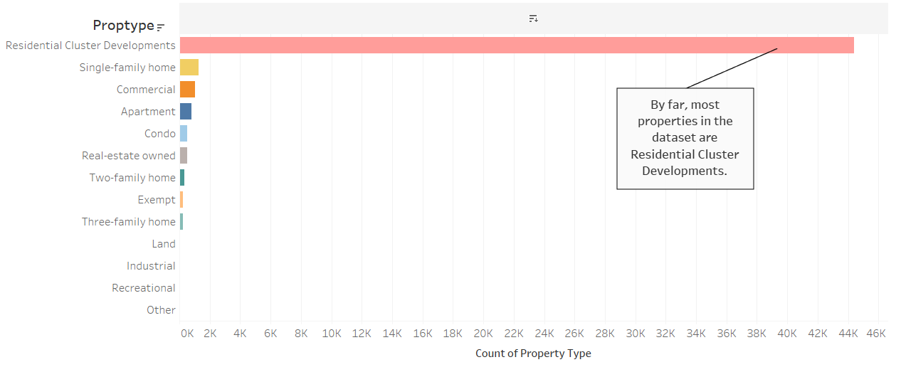
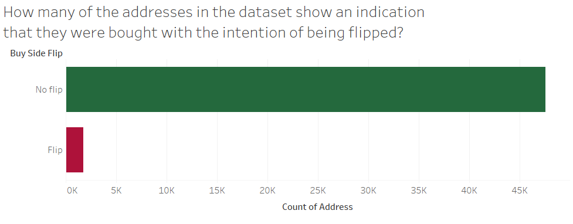
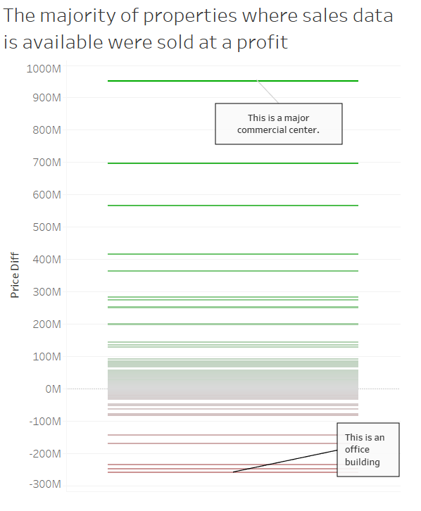
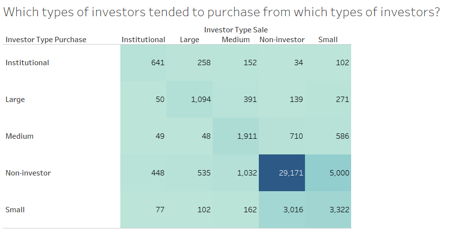
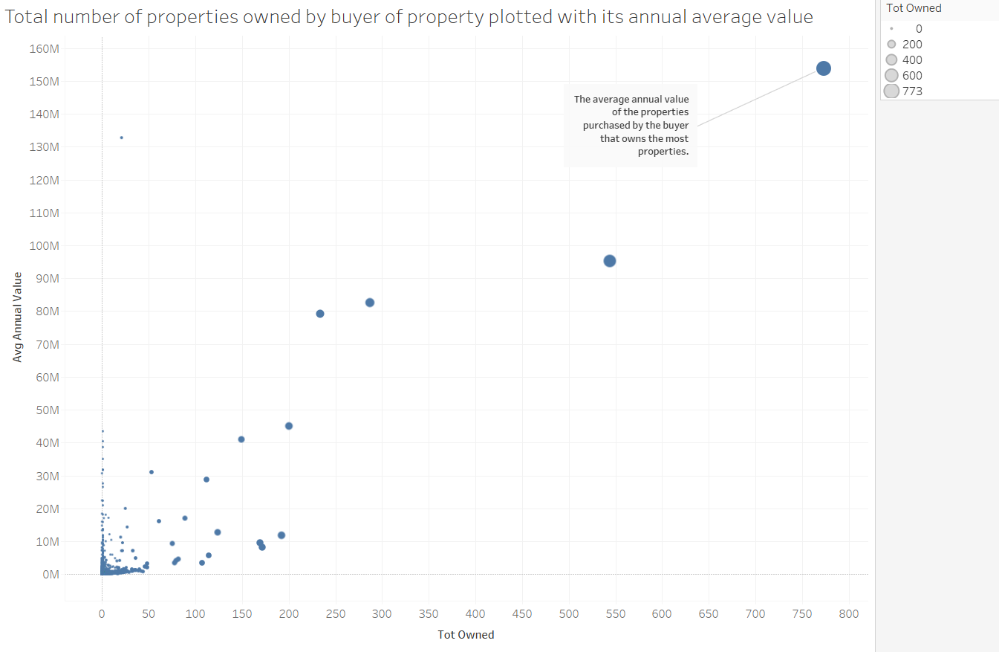

Firstly, I was interested in the overall data quality. What types of variables are in the dataset and which ones will I be able to use in my analysis?
Secondly, I am interested in the types of properties this dataset covers. Are they mostly residential? Commercial? What are the spatial implications of this? Are there neighbourhoods that are over- or underrepresented in the dataset? Looking at this will also inform which communities are affected by the property purchases in this dataset.
Thirdly, I'd like to have a closer look at the transactions. Who is buying from who? Which types of buyers and sellers most frequently appear in the dataset?
Discoveries & Insights

Properties plotted by Zip Code.

Addresses for which the "Price difference" variable is missing

Types of properties

Number of flipped properties.

Price difference for properties where data was available.

Types of transactions.

Average annual value of properties by number of total properties owned by buyer.
SUMMARY:
Regarding the first question, the Zip codes in the dataset do not seem as reliable as I'd like. In addition, almost half of the price difference data is missing. I like how the buyer/seller/purchase and price data seems to be mostly reliable. There are a very small amount of non-reliable datapoints I had to remove for some of the analyses, like a false lon/lat encoding or a weird property type I could not trace.
Most properties in the dataset seem to be residential clusters, located in Central Boston, Back Bay, South Boston, and a few scattered in other parts of the city. Areas like Allston/Brighton, East Boston or Jamaica Plains are not as prevalent in the data.
For properties that had price data available, most do seem to have been sold at a profit. I thought it was interesting that for most investor transactions, the investor type seemed to stay the same. The buyers that own the most properties seem to buy the properties with the most average annual value.
In summary, this Exploratory Data Analysis provides me with a few interesting leads on further analysis I would like to do. For example, I would like to find out more about the role of LLC, which types of purchases they were involved in and how that affected the price. In addition, I'd like to dig deeper into spatial inequalities in the dataset. In which neighbourhoods has speculative investment driven up the property prices?